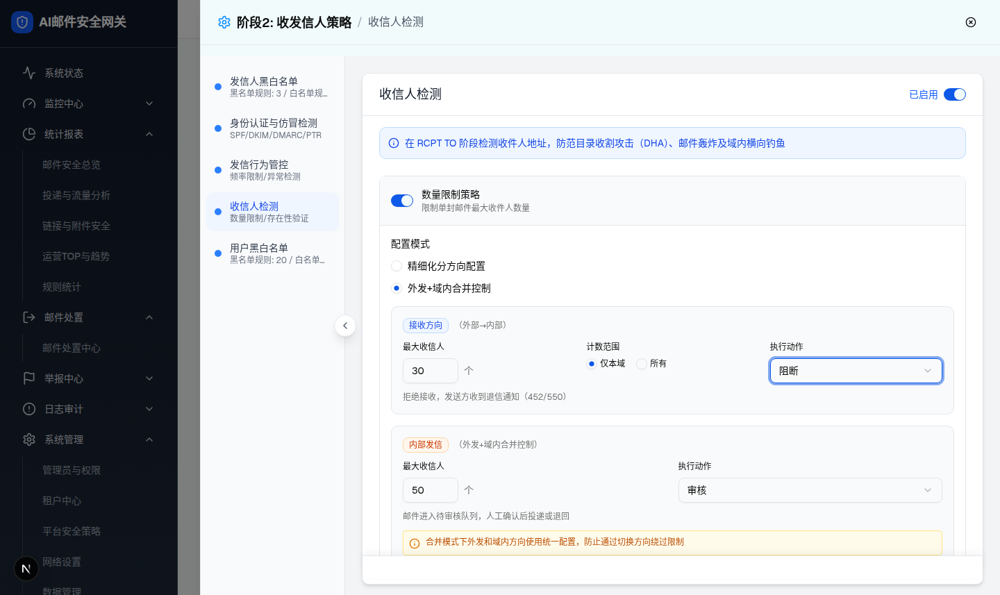

| 所属组件 | 2.2 收信人检测配置面板 renderRecipientCheckConfig |
| 主文件 | index.html |
| 触发路径 | 层级1 抽屉默认态 → 数量限制策略区块 → 配置模式 RadioGroup 选中“外发+域内合并控制”（recipientLimitMode="merged"） |
| demo 源码 | identity-strategy-page.tsx 行 1959-2062（merged 分支） |
| 截图 | screenshots/drawer-limit-merged-mode.png |
| DOM 提取 | radio merged=checked；scope radio id 变为 scope-local-m/scope-all-m；combobox 3 个 [阻断, 审核, 阻断]；number input 2 个 [30, 50]；“内部发信”卡节点数 23。 |
拒绝接收，发送方收到退信通知（452/550）
邮件进入待审核队列，人工确认后投递或退回
30 个 · 仅本域 · 阻断（详细模式完整规格见主文件层级1）
50 个 · 审核
20 个 · 隔离

| 区域 | 元素 | 默认值/文案 | 交互行为 |
|---|---|---|---|
| 配置模式 | RadioGroup | “外发+域内合并控制”选中 | 切回“精细化分方向配置”即返回层级1；两模式共享接收方向已填值。 |
| 接收方向卡 | 数量/计数范围/动作 | 30 个 · 仅本域 · 阻断（与 detailed 模式同一状态，radio id 换为 scope-local-m/scope-all-m） | 动作切换联动说明文案。 |
| 内部发信卡 | 橙色 Badge“内部发信（外发+域内合并控制）” | 最大收信人 50 个（mergedRecipientLimit，独立 state，恰与外发方向默认值同为 50）；动作 审核（mergedRecipientAction） | 动作切换联动说明；替代 detailed 模式的外发+域内两张卡。 |
| 内部发信卡 | amber 提示条 | 合并模式下外发和域内方向使用统一配置，防止通过切换方向绕过限制 | 纯展示（Info 图标）。 |
| 比对项 | demo 实际 DOM | 提取的 HTML | 是否一致 |
|---|---|---|---|
| radio 状态 | detailed=unchecked，merged=checked；scope radio id scope-local-m=checked | merged 选中、仅本域选中 | 一致 |
| 方向卡数量 | 2（接收方向 + 内部发信），外发/域内卡未渲染 | merged 体 2 卡；detailed 体默认 is-hidden | 一致 |
| 内部发信卡节点数 | 23（Badge、数量输入、动作下拉、说明、amber 提示） | 预览保留全部叶子控件与文案 | 一致（关键节点） |
| Badge 清单 | 接收方向 / 内部发信（+ 存在性验证区 3 个 pill 不在本层范围） | 接收方向 / 内部发信 | 一致 |
| 下拉/输入 | 数量限制区 combobox [阻断, 审核]，input [30, 50] | 同值 | 一致 |
| amber 提示文案 | 合并模式下外发和域内方向使用统一配置，防止通过切换方向绕过限制 | 同文案 | 一致 |